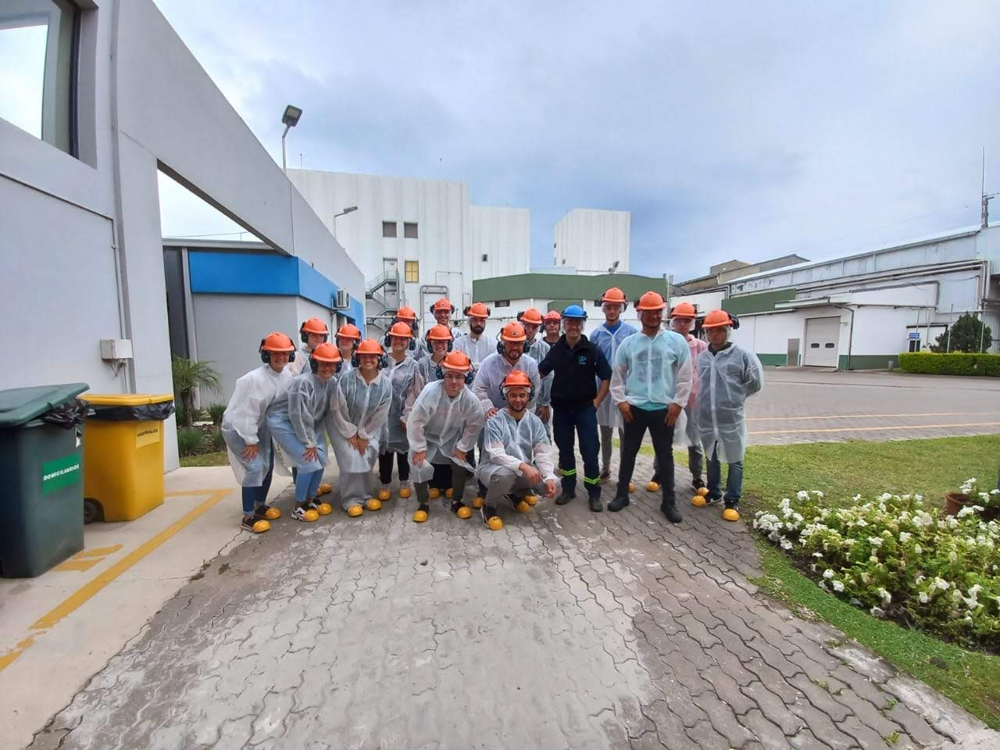
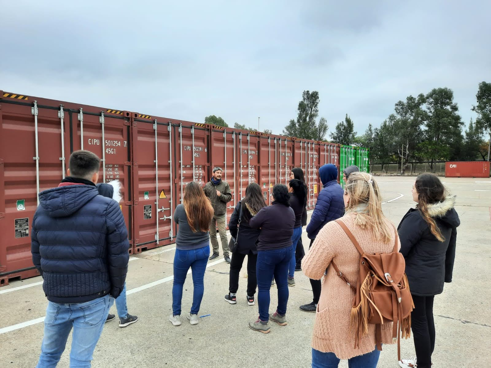
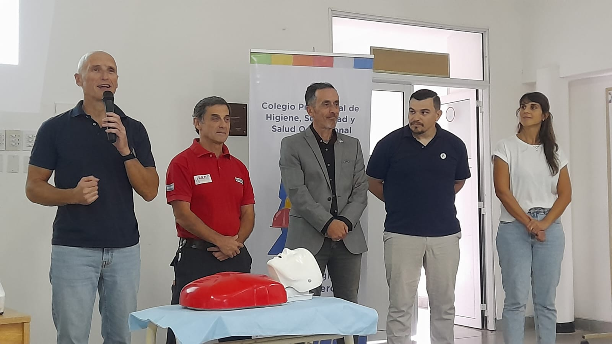

Tecnicatura Superior
Desarrollo de Software
- Título otorgado
- Técnico Superior en Desarrollo de Software
- Duración
- 3 años
- Modalidad y horarios
- Consultar al instituto
Inscripción: consultar convocatoria.
Explorá las carreras del instituto y encontrá la propuesta que se adapte a tus intereses.
Tecnicatura Superior
Inscripción: consultar convocatoria.

Tecnicatura Superior
Inscripción: consultar convocatoria.
Inscripción: consultar convocatoria.

Tecnicatura SuperiorInscripción: consultar convocatoria.
Sin apertura de inscripciones para el ciclo lectivo 2026.

Tecnicatura Superior
Inscripción: consultar convocatoria.
Consultá al instituto sobre la carrera que te interesa, sus condiciones de cursado y el proceso de ingreso.